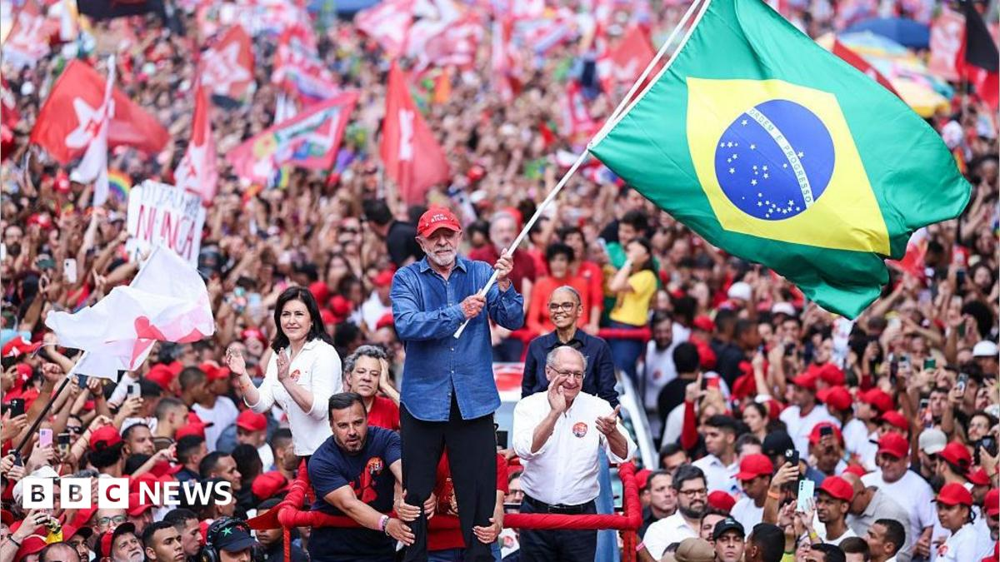

World · 27 Oct 2026
Lula's comeback in Brazil dents Trump's ambitions for Latin America

The Trump-Lula relationship may have thawed, but several issues could reignite tensions between the two leaders.
Multiple independent publishers are reporting on the same development: Lula's comeback in Brazil dents Trump's ambitions for Latin America.
The available reports place the development in the World category. The accounts were compared for agreement on the central event rather than simply shared names or broad topics.
One of the available reports describes the development this way: The Trump-Lula relationship may have thawed, but several issues could reignite tensions between the two leaders.
Readers should consult the linked source reports for additional context, updates and details that may change as the story develops.
Sources
This article was produced by the C. O. Eric AI Newsroom from the cited sources. It is published only after automated evidence and safety checks.